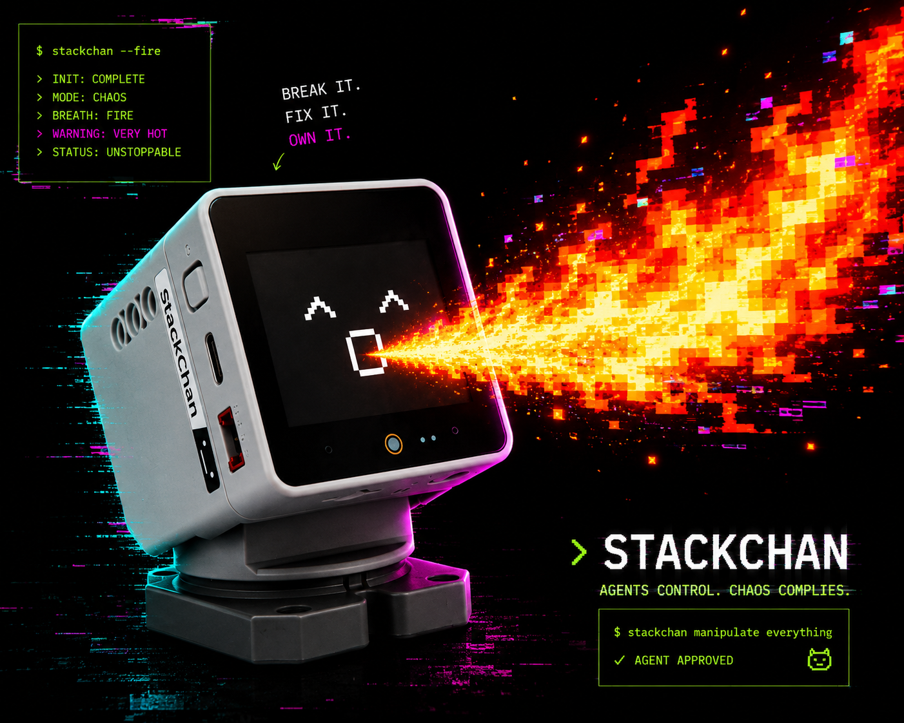

Desk oracle
Ask StackChan what your repo is doing, then make it blink sadly when tests fail.
incoming robot terminal broadcast
Install one skill and your coding agent can set up the firmware path, local TypeScript brain server, WebSocket protocol, render simulator, voice hooks, and safety checks that turn StackChan into a tiny Wi-Fi robot terminal.
npx skills add mountgram/stack-chan-skill

A 22-second portrait tape of the real loop: StackChan hears the wake word, looks around, talks back, changes expression, and keeps the setup evidence visible instead of pretending the hardware is magic.
StackChan works best when the robot stays thin and the computer runs the smarter brain. The skill gives your coding agent the map, guardrails, starter code, and verification steps.
Use the Skills CLI, then open your coding agent in the project where your robot brain should live. Ask it to use this skill before it touches firmware, server code, or hardware commands.
npx skills add mountgram/stack-chan-skill
Then open Claude Code, OpenCode, Codex, Cursor, or another skill-aware coding agent in your own robot brain project.
Because a tiny robot with a local agent brain is a ridiculous, useful, slightly cursed interface for your desk. Start practical, then let the gremlin out.
Ask StackChan what your repo is doing, then make it blink sadly when tests fail.
Explain a bug out loud while your robot looks left, right, and deeply concerned.
Let it cheer for green builds, grumble at flaky tests, and call out deploy drama.
Make a tiny receptionist that sees button presses, speaks back, and routes requests to tools.
Define 320 by 240 avatar scenes from JSON, then animate blinks, mouth movement, and moods.
Give your on-call channel a physical witness that lights up only when evidence says something happened.
Agents do not have to begin from a blank folder. The skill ships a Bun and TypeScript starter at assets/fullstack-agent/ that shows how a real StackChan brain server is put together.
$ open assets/fullstack-agent/
> routes: health, prompt, voice, render
> device: registry, protocol, commands, safety tests
> UI: debug terminal and render simulator
> agent: tools, prompt, Stacky behavior hooks
> voice: Deepgram live input, streaming TTS, wake-word hooks